Route mailboxes automatically
Keyword rules per mailbox, then team, person or round robin.
Utilities
SocialHub CX routes emails on instalments, meter readings or moves to the right team via keyword rules and bundles social media requests, for example during supply outages, as tickets. SocialHub is a German provider hosting in Germany, ISO 27001 and single sign-on.
Hosting in Germany (Falkenstein, Nuremberg), ISO 27001 (SocialHub) and single sign-on – documents for your vendor review are available on request.

Keyword rules per mailbox, then team, person or round robin.
Comments and messages as tickets, grouped in rule-based folders.
Consistent replies with variables; drafts from your service articles with sources.
First-response target and backlog in the dashboard.
Single sign-on (SSO); permissions via the SocialHub platform.
ISO 27001 (SocialHub), hosting in Germany (Falkenstein, Nuremberg) by a provider with a BSI C5 attestation, DPA on request.
Hosting in Germany (Falkenstein, Nuremberg), ISO 27001 (SocialHub) and single sign-on – documents for your vendor review are available on request.
SocialHub on OMR Reviews: 4.57 out of 5 from 374 reviews, as of 20.10.2026


FAQ
Yes, SocialHub CX assigns emails automatically via keyword rules per mailbox, for terms such as “instalment”, “meter reading” or “move”. If no rule matches, tickets go to a team, a person or round robin to available staff. Staff set to “Away” receive no new tickets.
SocialHub CX bundles comments, messages and emails as tickets in one workspace during supply outages. Rule-based folders group the requests, aligned templates ensure consistent replies, and bulk actions mark similar tickets as done at once. The dashboard shows volume and backlog over time.
SocialHub CX supports your vendor review with information on ISO 27001 (SocialHub), hosting in Germany (Falkenstein, Nuremberg) by a provider with a BSI C5 attestation and single sign-on; a DPA is available on request. NIS2 obligations lie with your company; we do not claim NIS2 compliance for SocialHub CX.
No, SocialHub CX includes no connection to billing or CRM systems and no open API. SocialHub CX handles written requests from email and social media; your team looks up billing data in the specialist system as usual and documents results in internal notes.
Q&A
SocialHub CX routes emails about instalments, bills or meter readings by keyword rule per mailbox directly to the responsible team, by round robin among available staff. Your team replies with aligned templates and variables such as first name and ticket number; the Co-Pilot drafts replies from your tariff and billing articles. The dashboard shows backlog and first responses.
SocialHub CX copes with request waves through rule-based folders, keyword rules, templates and bulk actions. A folder collects all tickets on instalments, an aligned template keeps replies consistent, and bulk actions mark several tickets done, set priority or assign them to yourself at once. Arrival times by hour and weekday help with staff planning.
SocialHub CX helps keep complaint deadlines in view by turning every complaint into a ticket with arrival time, owner and documented history. Rule-based folders show what has been open for a while, and the dashboard shows resolution times. A dedicated resolution-time target with escalation is not part of the product; the deadline itself follows from energy law.
SocialHub CX turns every complaint that reaches the utility by email into a ticket with a ticket number. On request, customers receive an automatic acknowledgement with this number. Keyword rules route complaints to the responsible team, and the activity log documents every step. Which channels you must offer legally is clarified by your legal department.
In the demo we show keyword routing, templates and the dashboard with typical utility requests.